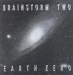

| Artist: | Brainstorm |
| Title: | Earth Zero |
| Label: | self produced |
| Length(s): | 59 minutes |
| Year(s) of release: | 1994/2001 |
| Month of review: | [06/2001] |
| 1) | Freeway | 4.11 |
| 3) | No-one Knows | 4.28 |
| 4) | Statis | 4.49 |
| 5) | Slow Train Of The Lie | 3.33 |
| 6) | Back Home On Terra | 3.01 |
| 7) | Triplanetary | 4.11 |
| 8) | The Last Long Summer | 2.14 |
| 9) | Anarchy | 3.16 |
Armageddon:
| 11) | No Tomorrow | 5.22 |
| 12) | Segue 1 | 1.01 |
| 14) | Segue 2 | 0.32 |
| 15) | Afterglow | 6.00 |
| 16) | Omega | 2.51 |
Vandal's Hymns is dedicated to Deng and I would guess they mean Deng Xiaoping. What is so distinctive about this band is the way the vocalists always give an impression of coming from the sixties or early seventies. Vandal's Hymn is actually a good trak, with a lot of tension in the vocals, and the strong guitarwork. I was thinking mostly of Floyd during this track, but I would be hard put to tell you exactly why.
No-one Knows continues in the catchy sixties style, but again the vocal melodies are good and distinctive and the main instrument is this time the acoustic guitar. The best part however is formed by some string like keyboards coming through and the driving follow-up on electric guitar. Very good. Actually many of the tracks here are plain pop songs, strong ones, but not what we would generally call "progressive" in structure. The arrangements and instrumentation make the songs sound progressive.
Statis is a soft acoustic track and reminds me strongly of the acoustic, depressing side of old Floyd. Later on the song becomes more forceful with a fuller sound and also some electric guitar and cosmic keyboards.
Slow Train Of The Lie is a mid-tempo rock song, similar to Beat from the Sixties and the weakest track so far. Back Home On Terra is a traditional with flute (probably flutish keyboards), the somewhat echoey vocal part is very melancholy.
Triplanetary must be a tribute to Doc. E.E. Smith's space opera of the same name. It opens with acoustic guitar and the vocal melody has a strong Floydian feel, say Dark Side Of The Moon. The ahhhh sounds remind more of the Moody Blues and I have to admit: they have managed to put out another likable track in which variation is however hard to find. Simply on the strength of composition and melody, without technical prowess or hi-tech production, this band manages to appeal.
The Last Long Summer is a rather naked acoustic track. Willowy string like synths and rather awkward harmony make up this rather amateurisch sounding track. This is too sixties for me. Anarchy is an easy-going opening track with some slow moving guitar work. A bit too tame.
Tyranny is the last short track before we come to the twenty minute epic Armageddon. The track is a Hawkwindish excited sounding rock track with some fast guitar work somewhat Celtic in sound. A driving track.
The epic Armageddon opens with No Tomorrow, a strong sinister track. The tenseness gets under the skin on this one. After the interlude Seque 1 we come to the slow moving Morning Red. Another melancholy track this one: "Morning red, morning red will you shine upon me dead". After this melancholy beginning something dark is abrewing in this track. The build-up is gradual but inescapable and ens with a strong melodic part on the guitar accompanied by strongly spacey keyboards. Magnificent. After the short Seque 2 we come to the final vocal track, Afterglow. This is a bit of a slow track in which too little happens. Now generally this not a real problem, but this time, the vocal melodies are simply not distinctive enough. It is not bad though. The closer of the album is aptly titled Omega and only features acoustic guitar.
Although this is a somewhat older recording, the songs sound quite clear and productionally there is nothing wrong with them.